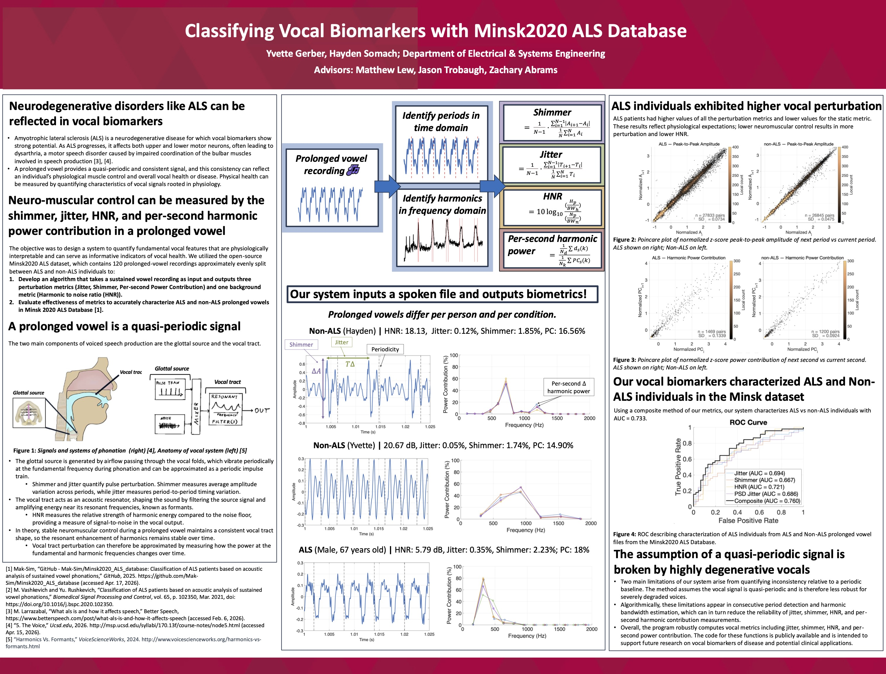
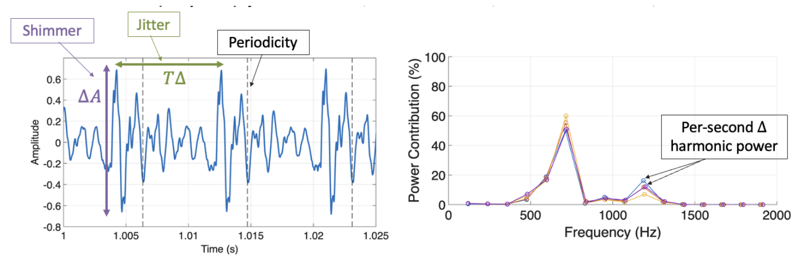
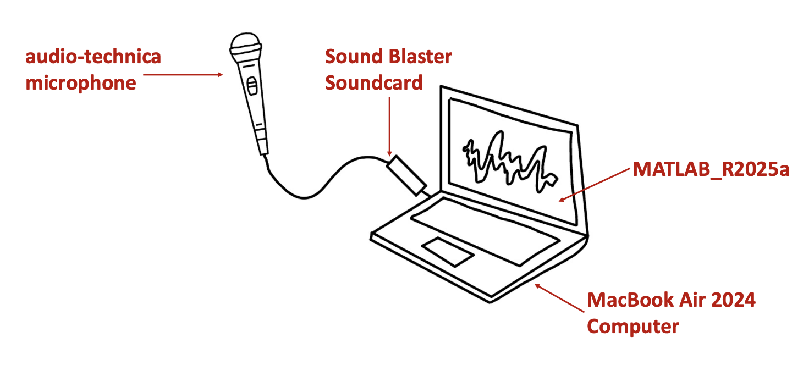

Click to view poster
For more information, refer to project writeup
Publicly Available Code (MATLAB package)
Amyotrophic lateral sclerosis (ALS) is a neurodegenerative disease for which vocal biomarkers show strong potential. As ALS progresses, it affects both upper and lower motor neurons, often leading to dysarthria, a motor speech disorder caused by impaired coordination of the bulbar muscles involved in speech production.
A prolonged vowel provides a quasi-periodic and consistent signal, and this consistency can reflect an individual’s physiological muscle control and overall vocal health or disease. Physical health can be measured by quantifying characteristics of vocal signals rooted in physiology.
Therefore, neuromuscular control can be measured by the shimmer, jitter, HNR, and per-second harmonic power contribution in a prolonged vowel

The objective was to design a system to quantify fundamental vocal features that are physiologically interpretable and can serve as informative indicators of vocal health. We utilized the open-source Minsk2020 ALS dataset, which contains 120 prolonged-vowel recordings approximately evenly split between ALS and non-ALS individuals to:1. Develop an algorithm that takes a sustained vowel recording as input and outputs three perturbation metrics (Jitter, Shimmer, Per-second Power Contribution) and one quality metric (Harmonic to noise ratio).
2. Evaluate effectiveness of metrics to accurately characterize ALS and non-ALS prolonged vowels in Minsk 2020 ALS Database.
